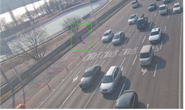
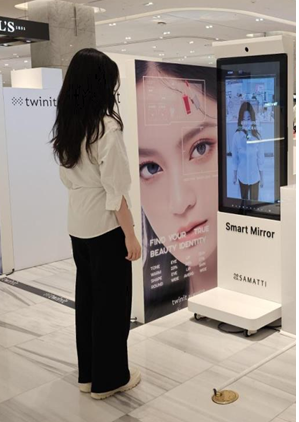

서울시설공단 AI 서비스

AI 영상검지기
도로에 진입하는 보행자를 AI로 인식하여 자동으로 조치하는 영상검지 시스템입니다. 실시간 영상 분석을 통해 안전사고를 예방하고 시민의 안전을 보장합니다.

따릉이 챗봇
서울시 공공자전거 '따릉이' 서비스를 위한 AI 챗봇입니다. 사용자 문의에 대해 지능적으로 응답하며, 대여/반납 안내, 이용 방법 안내 등 다양한 서비스를 제공합니다.

지하도상가 AI 피팅룸
종각역 지하도상가에 구축된 AI 기반 가상 피팅룸입니다. 고객이 옷을 입지 않고도 AI 기술로 옷을 입은 모습을 확인할 수 있으며, 스마트 쉼터와 함께 제공되어 쇼핑 경험을 혁신합니다.